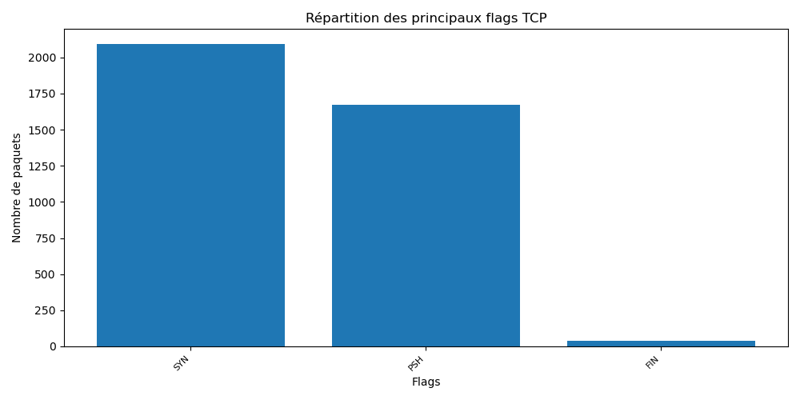
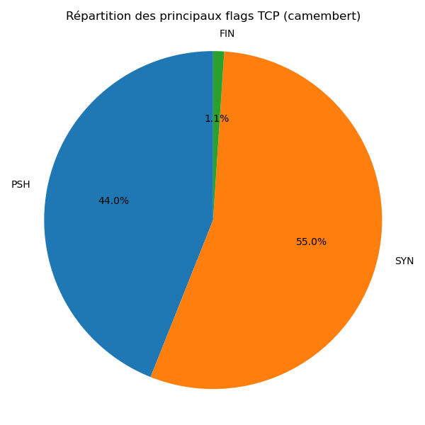
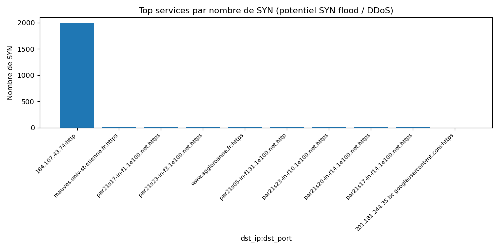
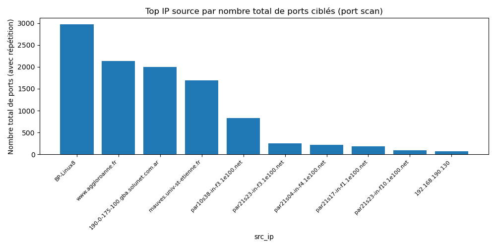
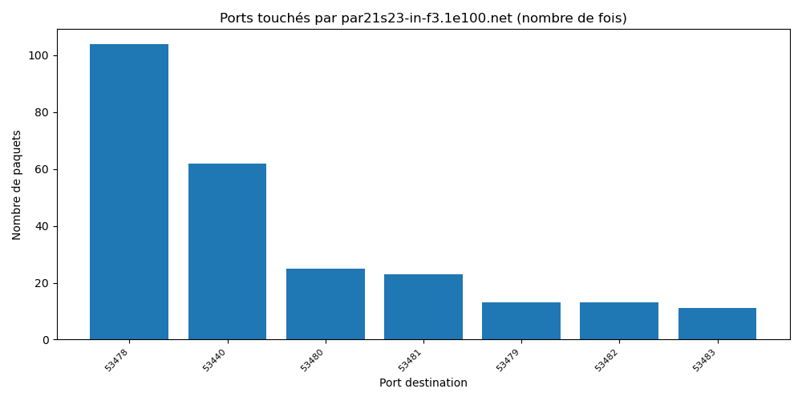
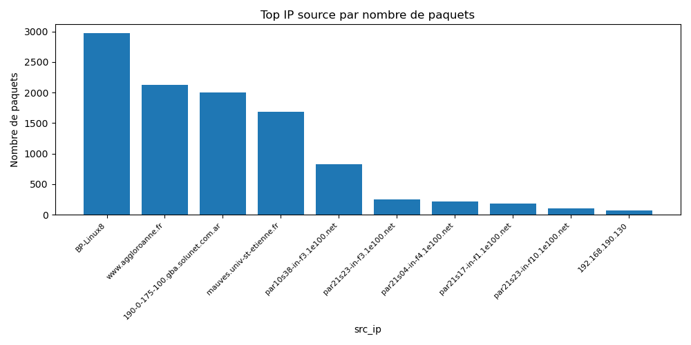
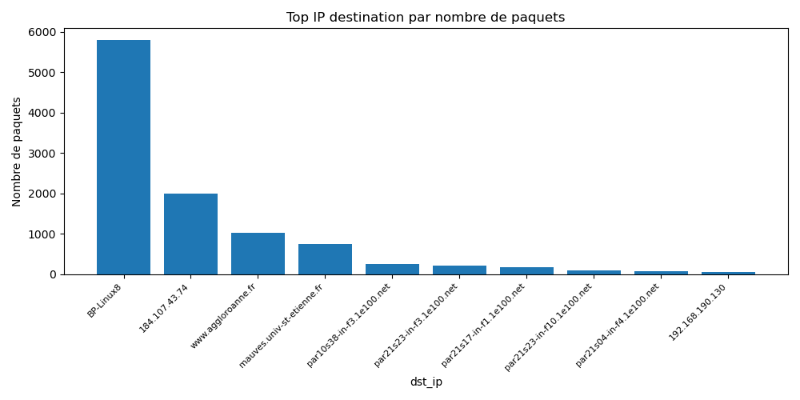
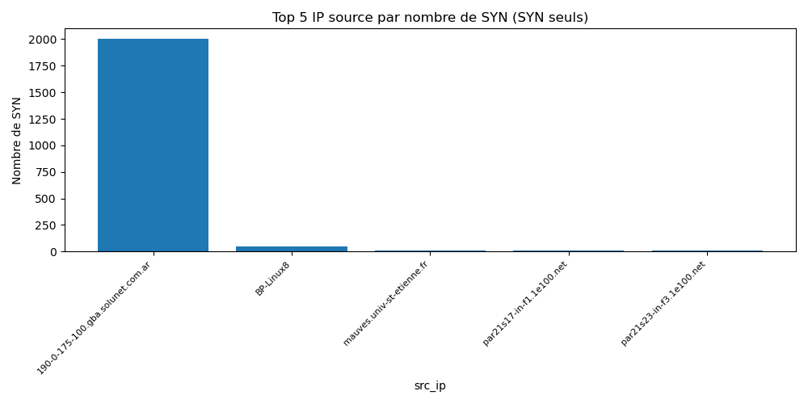

Rapport d'analyse réseau : trame_analyse
Ce rapport regroupe des graphiques pour aider à visualiser de potentielles attaques (SYN flood / DDoS, port scan, scans basés sur les flags TCP).
IP avec le plus grand nombre de ports touchés (scan possible) : par21s23-in-f3.1e100.net
Répartition des flags TCP

Répartition des flags TCP (camembert)

Services ciblés (SYN)

Sources possibles de port scan

Ports scannés par par21s23-in-f3.1e100.net

Top IP source

Top IP destination

Top 5 IP source (SYN seuls)
